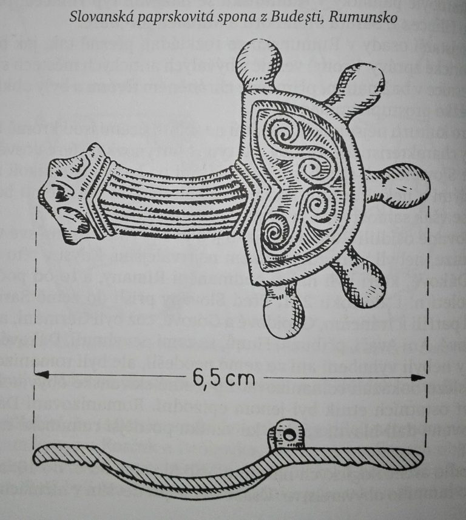

„Ve 4. století n. l. byly slovanské kmeny velmi početné a zaujímaly rozsáhlá území. Protože však ještě nijak neohrožovaly Řím a římské provincie, ‚kulturní svět‘ se o ně zajímal jen málo a většina autorů o nich buď vůbec nevěděla, nebo neměla důvod o nich psát. Plinius, Tacitus a Ptolemaios v 1. a 2. století n. l. znali sice jakési Venedy nebo Venety mezi Vislou, Baltským mořem (Venedský záliv), Karpaty (Venedské hory) a před sídly Peucinů a Fennů (tj. Ugrofinů), nevěděli však vlastně, co jsou tito lidé zač – Sarmaté, Germáni, nebo někdo úplně jiný, s těžko určitelnou etnickou příslušností a neznámým jazykem?“ – Slované, Magdalena Beranová
„Náčelník germánských Ostrogótů Hermanarik ve třetí čtvrtině 4. století ‚…zdvihl zbraně proti Venetům, kteří, i když pohrdali zbraněmi, ale počtem silní, zpočátku měli snahu stavět se na odpor. Nic však nezmůže množství nebojovných lidí, zejména když i bůh dopustí a přižene se množství ozbrojených.‘ V 6. století, v době, kdy žil Jordanes, však už zbraněmi nepohrdali a byli velmi bojovní a útoční. Jordanes si povzdechl: ‚…nyní …všude řádí.‘“ – Slované, Magdalena Beranová
„A protože jsem vyložil, nakolik jsem byl schopen, dobu, kdy Ostrogóti a Visigóti ještě tvořili jeden celek (a využil jsem přitom vyprávění předků) [pozn. patrně samotných Gótů], a pak jsem jasně vyložil také osudy Visigótů, oddělených od Ostrogótů, je nezbytné, abychom se opět vrátili do jejich starobylých sídel ve Skythii a vyložili stejným způsobem rodokmen Ostrogótů i jejich činy. O těch je známo, že po smrti svého krále Ermanaricha byli odloučeni od Visigótů a poddáni Hunům. Zůstali však ve své vlasti a Vinitharius [tj. ‚vítěz nad Vinidy’] z rodu Amalů si nad nimi uchoval vládu. Statečností se vyrovnal dědu Vultuulfovi, třebaže mu mnoho chybělo do Ermanarichova válečnického štěstí. Přece však těžce nesl nadvládu Hunů, pozvolna se z ní snažil uniknout, a přitom ukázat svou statečnost. Podnikl válečné tažení proti Antům [těm původním alansko-osetským, ‚neslovanským’]. Při prvním střetnutí s nimi byl sice poražen, potom si však vedl dobře a jejich krále jménem Boz i s jeho syny a sedmdesáti předáky dal pro výstrahu přibít na kříž, aby visícími mrtvolami zvýšil strach podrobeného národa. Ale když Vinitharius vládl takto svobodně sotva rok, hunský král Balamber to nemohl snést a povolal k sobě Gesimunda, syna velikého Humimunda, jenž pamatoval na svou přísahu věrnosti a s velkou částí Gótů byl poslušen vlády Hunů. S tím Balamber obnovil smlouvu a pak vytáhl proti Vinithariovi. Dlouho trvala válka mezi nimi a v prvním i druhém střetu Vinitharius zvítězil. A nikdo si už nedokáže vzpomenout, jak velké ztráty hunského vojska tehdy Vinitharius způsobil.“ – Gótské dějiny, Jordanes, 6. století n. l.
„Na rozdíl od barbarských společností doby římské a stěhování národů [např. někteří Germáni a Hunové], vstupujících do užšího kontaktu s antickými pozorovateli, nám v dostupných písemných i archeologických pramenech pro ‚slovanskou’ sféru chybí výraznější společenská elita [dokonce i u ‚Sklavinů’, o kterých se mimochodem ani neví, jestli vůbec mluvili slovanským jazykem], v jejímž zájmu by bylo slovanství na tak rozsáhlých územích prosazovat. V pochopení náplně této identity příliš nepomáhají ani autoři textů, které začínají od 9. století vznikat uvnitř těchto společenství.“ – Doslov: Etnicita v raném středověku aneb pátrání po původu kabátu, který se už nenosí, Ivo Štefan, „Neslované“ o počátcích Slovanů, editor Przemysław Urbańczyk
„Ve čtyřicátém roce panování Chlotharova shromáždil muž jménem Sámo, původem Frank z kraje senonského, větší počet kupců a odebral se za obchodem do země Slovanů zvaných Vinidové. Slované se již začali bouřit proti Avarům a proti jejich králi Kaganovi … když Vinidové zaútočili vojensky proti Hunům (Avarům), kupec Sámo vytáhl s nimi ve vojsku a tam se ukázal v boji s Huny tak prospěšným, že to bylo až hodno podivu, a nesmírné množství z nich bylo mečem Vinidů pobito.“ – Fredegarova kronika, 7. století n. l.
„Jako reakci na historické podmínky vytvořené zbudováním Justiniánovy opevněné hranice spatřujeme tedy politickou a vojenskou mobilizaci. Ztělesňovala tato skupinová identita, představovaná emblematickými styly, totožnost, již nazýváme etnicita? Snad, jenže konstrukce etnicity byla jistě spojena s vyznačením společenského rozdílu. Jinými slovy, prostřednictvím přijetí úboru se ‚slovanskými’ paprsčitými sponami se mohli jednotlivci přihlásit k členství v nové skupině a zviditelnit svůj úspěch a pevné postavení uvnitř elity. Byla to tedy slovanská etnicita? Možná, přinejmenším v očích byzantských autorů: ‚Byzantinci vytvořili Slovany’. Byzantští autoři užili výrazů ‚Sclavenoi’ a ‚Antoi’, aby vnesli řád do procesu skupinové identifikace odehrávající se před jejich očima severně od podunajské hranice. Utváření Slovanů se tedy netýkalo etnogeneze, nýbrž klasifikace a označování skupin lidí v byzantských dílech. Skupinová totožnost označovaná jako slovanskost se nezrodila v močálech pripeťských, ale ve stínu Justiniánových pevností.“ – Utváření Slovanů, Florin Curta, „Neslované“ o počátcích Slovanů, editor Przemysław Urbańczyk
„Slované, jejichž rozsáhlou expanzi na počátku druhé poloviny 1. tisíciletí zachycujeme archeologicky i historicky, byli národem nespočetným. Jejich kolonizace nespočívala ve vylidnění původní pravlasti (jako tomu bylo u Germánů). Bylo jich tolik, že se doma neuživili, a dokázali zaplnit a ovládnout velikou část Evropy. Přesto je dobře známe teprve z doby jejich stěhování a zabírání nových sídel. V 5.-6. století se nám Slované vynořují takřka pohádkově, jakoby nově zrození, bez předchůdců, bez vysvětlení. Archeologie už odedávna pátrá, odkud se vzali, kde byla jejich pravlast, ale výsledky bádání jsou rozporné a většinou se neshodují. Někteří archeologové, zmateni touto skutečností, dospěli k názoru, že Slované do té doby neexistovali, že se zrodili z různých navzájem smíšených etnických skupin. I jednotný slovanský jazyk je proti ostatním indoevropským jazykům poměrně pozdní. Kdyby šlo o menší oblast se sevřenějším územím, kdyby šlo o oblast, kde budoucí Slované převrstvili stálé obyvatelstvo a tam pak řadu desetiletí i staletí zůstali, bylo by to asi možné, ale Slované se stěhovali do různých míst, stýkali se a sžívali vždy s jinými etnickými skupinami, rozložili se na obrovské prostoře bez vzájemných pravidelných styků a bez reálné možnosti takových styků. A přitom již nejstarší zprávy mluví o jednotném jazyku a společném původu. Chyba bude asi na straně archeologie, ve stavu poznání a zkoumání, v obtížích, které archeologům vznikají, když chtějí určit a etnicky vymezit tu či onu kulturní skupinu. Archeologická kultura se totiž mění a vyvíjí v čase a prostoru a pojem kultura a etnikum znamenají někdy téměř totéž, jindy jsou naprosto rozdílné. Sledování určitých rysů do minulosti se daří jen málo, protože se vždycky najde nějaký skutečně závažný důvod, jak argumentaci oslabit nebo zpochybnit, anebo najít nějaké jiné vysvětlení. Zkoušejí se různé cesty a postupy, ale zatím bez obecně přijímaných výsledků. Nebývalý rozsah kolonizace, změna dlouholetých zvyků a sídel, jistý důraz na rozchod starých společenstev a na pohyblivý způsob života u některých z nich, války a loupeže, to vše se patrně odrazilo v hmotné kultuře Slovanů a staré výrobní tradice, zvyky a kulturní svéráz se dočasně rozplývaly nebo upadaly v zapomenutí. V době stěhování se udržely pouze výrobní postupy a rituály nezávislé na konkrétním prostředí. Jednoduchý pohřební ritus – spalování mrtvých bez bohatých milodarů – rovněž neumožňuje stanovit jakékoli zobecňující znaky pro jednotlivé kultury či skupiny. Také mnozí Germáni v době stěhování národů vyráběli místo krásných nádob předchozího období hrubě lepené hrnce, ale u nich jme ve výhodě: historických zpráv je více a v jejich původní pravlasti mohl žít sotva kdo jiný než oni. Zato Slované ve východní a střední Evropě měli kolébku na křižovatce různých útoků a přesunů, etnika se střídala a vzájemně převrstvovala. Historické zprávy mluví o Skytech, Sarmatech, Germánech a jiných, na severu žili Baltové, v mnohém se Slovanům podobající, vedle nich a za nimi Ugrofinové, ve střední Evropě mohly být zbytky Ilyrů a Keltů. Jestliže víme, že na určitém velkém území jedné archeologické kultury žilo více etnik, že se všichni vnějškem přizpůsobovali a že po určitý čas žili téměř stejně, používali stejné výrobky a stejné ozdoby, jak najít tu pravou slovanskou složku? Řešení se jisté najde, ale bude zapotřebí ještě hodně práce, kritičnosti a vědecké odvahy. Zatím se musíme omezit na to, co většina badatelů nejčastěji přijímá, na to, co se nám zdá nejpravděpodobnější, a na to, k čemu dospěli v oficiálních publikacích reprezentanti těch zemí, v nichž ležela a musela ležet kolébka starých Slovanů.“ – Problematika etnogeneze, Slované, Magdalena Beranová
„Zdálo se, že novodobé archeologické výzkumy budou schopny vyřešit otázky, na které hledání předků v antických pramenech nedovedlo odpovědět. Koncem 19. století archeologové objevili svébytnou kulturu doby bronzové a rané doby železné s centrem na území Lužice a Slezska. Vyznačovala se pohřby žehem, rozsáhlými pohřebišti žárových hrobů s předměty věnovanými mrtvým, keramikou s výraznými a nezaměnitelnými znaky a mohutnými hradišti. Byla nazvána kulturou lužických popelnicových polí. Ti, kdo hledali kolébku Slovanů ve střední Evropě, viděli v lidu lužických popelnicových polí Praslovany. Postupně se však ukazovaly rozdíly mezi rysy kultury lužické a kultury prvních Slovanů ve střední Evropě. Obě kultury byly od sebe odděleny několika staletími na přelomu letopočtu, v nichž se nenašly stopy, které by svědčily o návaznosti těchto kultur. Vývoj lužické kultury ve slovanskou nelze dokázat. Přesto byli (a jsou i dnes) někteří polští historikové a archeologové přesvědčeni o autochtonnosti Slovanů na východ od Labe a na území Polska. Jiná teorie klade kolébku Slovanů do pohraničí dnešního Polska a Ukrajiny, úžeji do povodí řeky Pripjet. Na jejím utváření se významně podíleli čeští vědci. Pavel Josef Šafařík odmítl ve Slovanských starožitnostech panonský i sarmatský původ Slovanů a přiklonil se k utváření slovanských společenství na východě v nepříliš přesně vymezené oblasti mezi Dunajem, Dněprem, Baltickým mořem a Odrou, nikoliv však v Asii, do které v jeho době někteří autoři Slovany vykazovali. Šafaříkův výklad slovanské kolébky přijal a rozpracoval Lubor Niederle. Avšak ani tuto, u nás obecně přijímanou, představu nebylo možno archeologickými důkazy jednoznačně prokázat. Hledání původu Slovanů v kultuře przeworské v severovýchodním Polsku anu v kultuře oksyvijské na území Ukrajiny nedalo uspokojivou odpověď na otázku původních sídel, protože tyto kultury se shodují se znaky kultury slovanské jen některými rysy.“ – Stopy zapomenutého lidu: Obraz dějin Polabských Slovanů v historiografii, Libuše Hrabová
„Ve 3. – 1. století př. n. l. a na počátku našeho letopočtu byla na Ukrajině a v Bělorusku rozšířena kultura zarubiněcká, nazvaná podle velkého a slavného pohřebiště Zarubincy na Ukrajině, které zkoumal již v roce 1899 český archeolog-amatér Vincenc V. Chvojka. Tento badatel, který pracoval v carském Rusku, byl jedním ze zakladatelů ukrajinské archeologie. Zarubiněcká kultura byla rozložena ve středním a horním Podněpří a v Polesí. Hranici jejího rozšíření tvoří přítoky Dněpru Pripjať, Sož, Desna a na jihu Ros a Tjasmin, ale v určitém období pronikala až do oblasti jižního Bugu a dolního Podněpří. Měla několik místních variant, ale jejich zvláštnosti zatím neumíme uvést do souvislosti s určitými možnými odlišnostmi etnickými. Obyvatelé této kultury žili v neopevněných osadách, které obvykle ležely na přírodou chráněných místech, jakýchsi přirozených hradištích; v konečné fázi této kultury bývaly některé z nich opevňovány pomocí valů nebo příkopů. Sídliště se koncentrovala do menších okruhů asi 15-20 km vzdálených, v nichž bývalo vždy několik vesnic. Osady se rozkládaly na prostranství 0,5-2 ha a mívaly značné množství domů. Tak např. na jednom z nejlépe prozkoumaných sídlišť ve středním Podněpří zvaném Pylypenkova Hora bylo vykopáno 38 domů. Předpokládá se, že původně jich bylo kolem 150, z toho asi polovina stála současně, další pocházely z druhé fáze kultury. Na horním Podněpří, na sídlišti u vesnice Čaplyn, bylo prozkoumáno 25-30 obydlí z jedné fáze. Ve vesnicích žilo tedy 100 až 400 obyvatel zároveň. Obydlí byla pravoúhlá, asi 0,5 m zahloubená do země, se základnou 9-24 m2. Jen vzácně byla postavena srubovou technikou, většinou to byly domy z kůlů propletených proutím a vymazaných hlínou. Kromě hliněných ohnišť uvnitř domu bývaly poblíž stavení samostatné pece z kamenů a zásobní jámy. Pohřebiště byla v blízkosti osad a mívala několik set hrobů. Nositelé zarubiněcké kultury své mrtvé spalovali a ukládali do země buď v popelnicích, nebo dávali popel přímo do mělké jamky. V tom byl pohřební ritus velmi blízký pohřebištím z doby tzv. pražského typu, ale v zarubiněckých hrobech bývaly různé milodary – dvě nebo tři pěkné leštěné nádoby, spony, prsteny, náramky a zbytky masité potravy. Vzácně pochovávali tělo nespálené. O zarubiněcké kultuře se od začátku uvažovalo, že byla slovanská nebo praslovanská, ale bezpečné důkazy chybějí. Většina badatelů zastává tento názor dodnes, i když připouštějí, že pod některými okrajovými částmi se mohli skrývat např. Baltové nebo že Baltové mohli být spolutvůrci této výrazné kultury a kulturní oblasti. V. V. Sedov se dokonce vrací ke starší myšlence baltoslovanské jednoty. V Bělorusku se tamní archeologové, zejména L. D. Pobol, snaží zachytit pozdní etapu této kultury, která tam má, jak se zdá, své přímé pokračování až do 5.-6. století n. l. Ne všichni ale tuto teorii přijímají. I když souhlasíme se slavinitou zarubiněcké kultury nebo s teorií baltoslovanskou, z jejího geografického rozšíření je zřejmé, že to nemohla být jediná slovanská kultura počátku 1. tisíciletí n. l. a že se pod ní nemohli ve vší úplnosti skrývat starověcí Venedi-Veneti, o nichž alespoň od 4. století víme, že byli Slovany. Musíme tedy pátrat také v nynějším Polsku, v Povislí a odtud dále na východ směrem k zarubiněcké kultuře. V této oblasti, ale ještě dále na západ, kde již pravděpodobně Slované nesídlili, se od 2. století př. n. l. formovala tzv. kultura przeworská, která se vyvíjela až do 3.-4. století n. l. Przeworská kultura má četné společné rysy s kulturou zarubiněckou, ale v mnohém se odlišuje. Tak např. nositelé obou kultur koncem 1. tisíciletí př. n. l. své mrtvé spalovali a ukládali je do plochých hrobů bez mohyl; pohřebiště mívala i několik set hrobů. Popel sypali do jamek v zemi, někdy ho dávali do popelnic. V 1.-4. století byly pohřby v urnách stále častější, v ranějším období naproti tomu vzácné. Ve starším období přidávali k popelu do hrobů z rituálních důvodů i rozbité nádoby, ale jen vzácně jiné milodary. V mladším období naopak vkládali nejenom urny, ale někdy i další nádoby, snad s potravou, a předměty denního užívání, ozdoby, dokonce i zbraně. Pohřby nespálených těl se vyskytovaly vzácně. Sídliště bývala v úrodných oblastech, často blízko sebe, u řek, na přírodou chráněných místech. Domy byly větší, někdy polozemnice, častěji však stály nad zemí bez zahloubení; měly konstrukci založenou na sloupech, vypletených zřejmě proutím. Obytná plocha se pohybovala mezi 30-34 m2, někdy měly domy i dvě místnosti, přístavek nebo síň. Obdobný způsob života, pohřbívání, ba ani keramiky ještě nemusí znamenat totožnost etnickou, tím spíš, že podobné rysy měly i jasně germánské kultury. Pokud jde o keramiku, velmi blízká je např. některá keramika ze Slezska a nádoby z Jutského poloostrova, kde žili bezpochyby Germáni. I pohřební zvyky měli Germáni v určitém období podobné. Historické zprávy nás informují o pohybu některých germánských kmenů a o jejich pobytu v oblasti przeworské kultury. Přesto je zřejmé, že Germáni byli z větší části novým elementem, že se tu nezrodili a že tu nežili trvale. Trvalý substrát alespoň východní části této kultury tvořili Slované, kteří byli jejími spolutvůrci. Na przeworské kultuře se podíleli i germánští Vandalové (především Silingové), Gótové a další, ale zatím se nepodařilo odlišit pozůstatky jedněch nebo druhých. Celá kultura byla jaksi nivelizovaná, založená na starých tradicích laténského období, na keltských vlivech i vlivech z římských provincií a v neposlední míře na vzájemném ovlivňování Germánů a Slovanů.“ – Pozná archeologie Slovany již v době kolem zlomu letopočtu?, Slované, Magdalena Beranová
„Pokud přijmeme teorii o počátku slovanské etnogeneze ve východním cípu lužické kultury, kde se svébytné etnikum zformovalo pod silným vlivem západobaltské pomořské kultury a po expanzi Keltů do středovýchodní Evropy v rámci przeworské kultury, pak lze vymezit slovanské archaické náboženství velmi přibližně od 4./3. století př. n. l. přes existenci przeworské a čerňachovské kultury a velkou slovanskou expanzi v 5. – 7. století do počátků christianizace slovanského prostoru v 9. století. V tomto období docházelo bezpochyby k pronikání výrazných vnějších vlivů – naznačili jsme výše přítomnost íránských prvků v kultuře praslovanského obyvatelstva čerňachovské kultury, jejichž relikty byly patrné i v pohanské epoše kyjevské Rusi … Navíc velká migrace na Balkán, do západních částí střední Evropy a do severních oblastí Evropy východní vedla ke značnému promíšení slovanského obyvatelstva, které se rozvíjelo v rámci kultur przeworské a čerňachovské, tudíž se mísily a splývaly možné lokální odlišnosti … Co ze srovnání těchto informací vyplývá? Předně pro naše téma již výše konstatovaný fakt, že jména božstev z oblasti Polabí a staré Rusi si neodpovídají až na jedinou výjimku – teonym Svarožic. Za druhé je to patrný íránský vliv na kyjevskou oblast. Za třetí lokální odchylky v kultu – polabská oblast zná pohanské kněžstvo a chrámy … Při [analýzách] se třeba může prokázat solární podstata polabských božstev nebo jejich značná vzdálenost od staroruského panteonu. Může se prokázat, že vliv středoevropského keltského obyvatelstva v době slovanské etnogeneze na periferní oblasti značně vzdálil polabské Slovany a jejich kulturu ostatním slovanským oblastem.“ – Perun: historie a typologie slovanského hromovládce, Michal Téra
„Vývoj v Polsku, i když etnicky nejasný a pro archeology nerozlišitelný, má alespoň tu výhodu, že můžeme sledovat kulturu po celou první polovinu 1. tisíciletí n. l.; v oblasti zarubiněcké kultury je tomu právě naopak. Jak jsme již uvedli, v severnějších částech se uvažuje o existenci pozdně zarubiněcké etapy a o její návaznosti na kulturu 5.-6. století, ale nálezů je zatím málo. V jižnějších oblastech zarubiněcká kultura prostě mizí a je překryta novou kulturou černjachovskou. Černjachovská kultura, stejně jako zarubiněcká, byla objevena v roce 1889 V. V. Chvojkou a nazvána podle pohřebiště u vesnice Černjachiv. Její centrum leží na středním Dněpru, podobně jako centrum kultury zarubiněcké, ale nesahala tak na sever jako předešlá kultura, zato dále na jih, na východ a na západ. Přímou kulturní archeologickou návaznost vysledovat nelze, i když je zřejmé, že nejde o lid, který by odněkud přišel a usadil se na Ukrajině, ale že zde sídlil už dávno. Kultura je datována od 2. do 4. století. Od počátku se soudilo, že i černjachovská kultura souvisela se Slovany – vždyť byli v této oblasti bezpečně doloženi historickými prameny 6. století. Čím více se badatelé věnovali podrobnostem a čím víc bylo nálezů, tím se situace stávala spletitější. Ukazovalo se, že jde o kulturu zřetelně víceetnickou. Stejný kulturní projev a stejné zvyklosti tu měli Slované, část pozdních Sarmatů, část tráckých kmenů, byli zde i germánští Gepidové, Gótové a další. V šedesátých letech se dostaly do popředí názory, které slovanskou účast na této kultuře téměř popíraly nebo ji považovaly za nezjistitelnou. Dnes se v ukrajinské archeologii obecně soudí, že centrální část, tedy část na středním Dněpru, byla nejspíš slovanská. V. V. Sedov považuje za slovanskou oblast podolsko-dněperskou. Výrazné lokální varianty na periférii, volyňská, naddněsterská, bužsko-dněperská a sejmodonská, jsou archeologicky po etnické stránce smíšené. Velmi výraznou skupinou je naproti tomu oblast na západní Volyni, nazvaná podle pohřebiště u vesnice Dytynyči, která je patrně germánská a ukazuje na soužití příchozích skupin z Pobaltí s domácím obyvatelstvem. A jak to bylo v 1. tisíciletí př. n. l. a ještě dříve? I tato otázka se zkoumá, ale zde jsme skutečně jenom v oblasti dohadů. Uvažuje se o různých archeologických kulturách časné doby železné a pozdní doby bronzové, o jejich možné slavinitě, kontinuitě a dalším přežívání, ale vesměs bez závažných důkazů. Stále živé zůstávají úvahy českého vědce Lubora Niederla, že některé kmeny na sever od Černého moře (přibližně mezi Kyjevem a Volyní) v 6. století př. n. l., které uvádí Hérodotos při popisu tehdejších Skytů, mohly být Slovany či jejich předky. Jsou to např. Budinové nebo Neurové, o jejichž etnické příslušnosti se nic bližšího nevědělo. Uvažovalo se i o Skytech-oráčích a Skytech-rolnících, lišících se od ostatních Skytů, kteří byli kočovnými dobytkáři, protože Slované se od pradávna považovali za zemědělce. Budinové a Neurové, budiž. Rolnické zaměstnání však není žádným důkazem ani projevem etnicity. I někteří Skytové byli rolníky. Podle skytské legendy, kterou zaznamenal Hérodotos, spadly z nebe na skytskou zem zlaté předměty – dary bohů, a to rádlo, jho, sekera a číše, a tyto předměty se staly symbolem královské vlády.“ – Otazníky kolem Slovanů ve 2.-4. století & Slované zemědělci, Skytové kočovníci?, Slované, Magdalena Beranová
„Časovou mezeru v osídlení celého rozsáhlého území během 5. století až k nejstarším památkám ze 6. století, které lze bezpečně považovat za slovanské, nelze prozatím spolehlivě vyplnit. S výše uvedenými kulturami převorskou, pozdně zarubiněckou (tzv. kyjevský typ či kultura) a černjachovskou mají sice nejstarší slovanské památky řadu dílčích spojitostí, ale bezprostřední návaznost zde postrádáme a žádnou z nich nelze podle dosavadních znalostí označit za čistě praslovanskou. Kvalitativně se tedy jedná o zcela nový jev.“ – Stěhování národů a východ Evropy, J. Bednaříková, A. Homola a Z. Měřínský; problém spojování „etnik“ z určitých období s archeologickými „kulturami“
„Přijetí výše diskutované ‚etnogeneze’ Slovanů a migračního modelu mnoha archeology jen málokdy doprovází hlubší reflexe mechanismů a příčin postulované ‚migrace’. Na první pohled je samozřejmě migrace nejjednodušším modelem objasňujícím rozšíření slovanských jazyků, současně však vytváří jisté problémy, z nichž nejpodstatnější je tázání se po demografickém potenciálu migrující populace. Již to samo stačí ke zpochybnění jednoduchého modelu migrace v takové podobě, jak jej navrhovali polští archeologové počínaje kategoricky formulovanými koncepcemi Kazimierze Godłowského. Část autorů interpretuje počátek slovanských jazyků v Polsku jako důsledek migrace etnik, která tyto jazyky užívala. Ty měly nahradit jinou populaci hovořící jazykem, který náležel k jiné jazykové skupině. V textech těchto badatelů by se však měla projevovat větší znalost obsáhlé literatury vzniklé od 60. let, týkající se nejen archeologie, ale i řady spřízněných odvětví. Jiné mechanismy, jako např. rozpad systémů, byly zatím – jako alternativa k migrační hypotéze – brány v potaz jen výjimečně. Již dávno Thompson varoval, že ‚koncepce migrace je jedním z nejnebezpečnějších interpretačních nástrojů dostupných badatelům o lidských dějinách.’ Bohužel ti, pro které se archeologie omezuje především na otázku lokalizace a přemísťování ‚kulturních oblastí’ či etnonym na mapě, si toto nebezpečí neuvědomují. Tato totální koncentrace na jeden model zcela ignoruje jiné možnosti objasnění procesu šíření jazyka, které vznikly na základě jiných vědeckých odvětví, jako např. sociolingvistiky. Je zřejmé, že v budoucích pracích bude třeba podstatně více pozornosti věnovat modelům objasňujícím kulturní a jazykové změny v kategoriích jiných mechanismů než pouze v rámci zjednodušeného migračního modelu, který dosud naprosto dominuje. V posledních letech bylo vyvinuto několik přírodovědných metod, které dovolují objasnit a interpretovat přemísťování dávných etnických skupin. Tyto techniky mohou být využity k ověření migračního modelu. Izotopová analýza zubní skloviny umožňuje průzkum putování určitých skupin, které se přesouvaly z oblastí charakterizovaných určitým složením izotopů [v půdě – pozn. překl.] do jiných. Lze vyslovit domněnku, že takové izotopové rozhraní tvořily Karpaty. Výzkum se však bude nadále potýkat s jiným problémem; tato metoda dovoluje identifikovat pouze první migrující generaci, přičemž její využití silně komplikuje naprostý nedostatek kosterních pozůstatků Slovanů z období před prosazením mohylového pohřbívání. Jinou metodou, která je nadále rozvíjena a byla jí již věnována obsáhlá literatura, jsou různé paleogenetické postupy analyzující vzorky několika typů současného DNA, které se následně snaží interpretovat v kategoriích změn dávných populací. Tyto metody byly využity např. v nedávné debatě o ‚etnogenezi’ Britských ostrovů. Dnes je možno jejich výsledky použít k posouzení ‚genetického vkladu’ osadníků z kontinentu v různých momentech britské historie. Přestože je samozřejmé, že využívání těchto metod je spojeno s četnými komplikacemi (jednou z nich je určení času a stanovení charakteru předpokládaných změn), je třeba pokusit se o jejich aplikaci i za předpokladu, že by se pouze měly otevřít další nové otázky.“ – Pochopit neznámé: Archeologie a šíření slovanských jazyků, Paul Barford, „Neslované“ o počátcích Slovanů, editor Przemysław Urbańczyk
„V dosti obtížné situaci jsou badatelé počátků raného středověku, kteří bolestně pociťují ‚náhlý’ nedostatek různorodých a dobře datovaných pramenů. Nutí je to často ke spolupráci se specialisty na lépe poznané sousední epochy. Zatímco jedni hledají podporu spíše u badatelů specializovaných na dobu římskou, druzí nacházejí pochopení spíše u medievalistů disponujících již jistým penzem písemných pramenů. Mezi nimi se z důvodu prohlubujících se historiografických a metodologických důvodů vytvořilo těžko vyplnitelné prázdno, které je dělí na dvě ‚frakce’. Badatelé zabývající se přechodným obdobím stojí před obtížným úkolem nalezení adekvátního jazyka pro jeho popis. Dřívější období jsou na základě chronologické a geografické rozrůzněnosti identifikována pomocí jasně definovaných archeologických kultur, kterým je v poslední době čím dál častěji přisuzována etnická identifikace odvozovaná z písemných pramenů, i když se současně uniká diskusi o interpretačních důsledcích takového ztotožňování. Slovanské kulturní sjednocení počátku raného středověku se na druhé straně vzpírá vytvoření precizní a obecně srozumitelné archeologické klasifikace. Základní metody dobře ověřené při zkoumání starších epoch tak náhle selhávají, aniž by bylo současně možno užít metod vyvinutých pro bádání o období, z něhož už známe písemné prameny. Dlouhou dobu bylo za řešení považováno užívání archeologické koncepce ‚kmene’, i když v podstatě nikdy nebyla definována. Ještě problematičtější je koncepce ‚vzájemné komunikujících společenství’, která je natolik obecná, že nic neobjasňuje. Absence srovnatelné metodologie a dokonce i společného systému definice analytických pojmů má bohužel za následek, že polští badatelé zabývající se ranými Slovany ‚vzájemně komunikující společenství’ nevytvářejí.“ – Gordický uzel slovanství v Polsku, „Neslované“ o počátcích Slovanů, editor Przemysław Urbańczyk
M458

„Zajatci, které si Slované přivedli domů, byli na tom na tehdejší dobu velmi dobře. Slované nebyli otrokáři a otroky pro své hospodářství nepotřebovali. Zajatci zůstávali ve slovanském prostředí jako otroci jenom na určitou dobu. Potom dostali na vybranou, chtějí-li se vrátit za náhradu, nebo žít se Slovany jako svobodní lidé a přátelé … V listnatých lesích byli Slované byzantskému vojsku obzvláště nebezpeční, protože houštiny vyhovovaly jejich způsobu boje a Slované se v nich dokázali velmi dobře ukrýt. Proto tzv. Pseudo-Maurikios koncem 6. století doporučoval, aby se výpravy proti Slovanům vedly raději v zimě, kdy jsou stromy bez listí a neposkytují dobrý úkryt. Byzantským vojskům dělaly jisté potíže přechody přes řeky, stavba mostů a přeprava na lodích. Slované naproti tomu přecházeli řeky snadno a dokonale snášeli pobyt ve vodě. Jestliže byli překvapeni nepřítelem, uměli prý se ponořit pod vodu, lehnout si v hloubce na záda a dýchat dlouhou dobu pomocí dutého stébla, které drželi v ústech a které vyčnívalo nad hladinu.“ – Slované, Magdalena Beranová
„Ačkoli byla nenávist ke křesťanům a podhoubí pověr u Ránů silnější než u jiných Slovanů, přece vynikali i mnoha přirozenými dobrými vlastnostmi. Byli totiž velmi pohostinní a rodičům prokazují povinnou úctu. Nikdy byste u nich nenašli žádného nuzáka ani žebráka. Jakmile někdo z jejich řad buď zeslábne nemocí, nebo sejde věkem, je svěřen péči dědicově, u něhož má být opatrován se vší laskavostí. Pohostinství a péče o rodiče jsou u Slovanů první ze ctností. Země Rujanců jinak oplývá plodinami, rybami a zvěřinou. Hlavní město té země se nazývá Arkona.“ – Kronika Slovanů, Helmold z Bosau, 12. století